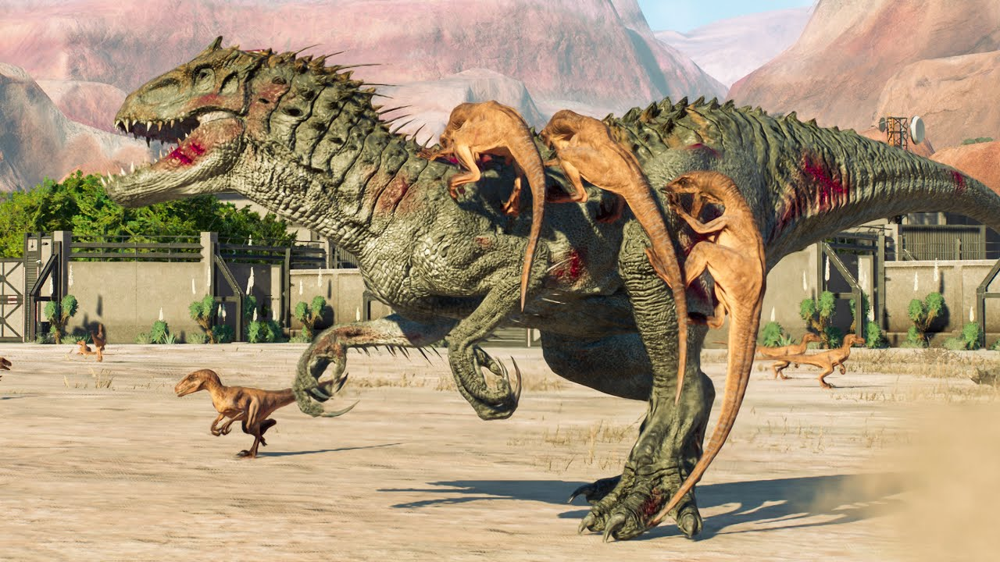
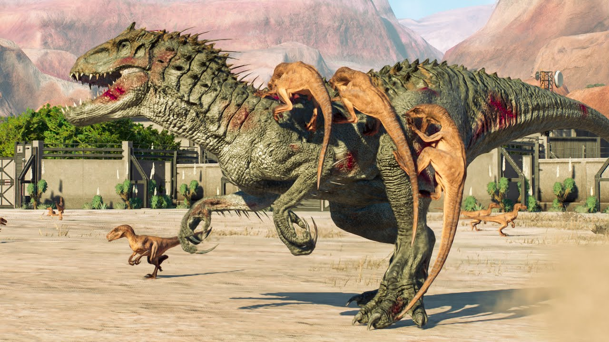

Dinosaurios Famosos
El T-Rex y el Velociraptor son dos de los dinosaurios más conocidos, popularizados en la cultura moderna.

Conoce a los dinosaurios que se han vuelto iconos culturales
El T-Rex y el Velociraptor son dos de los dinosaurios más conocidos, popularizados en la cultura moderna.
